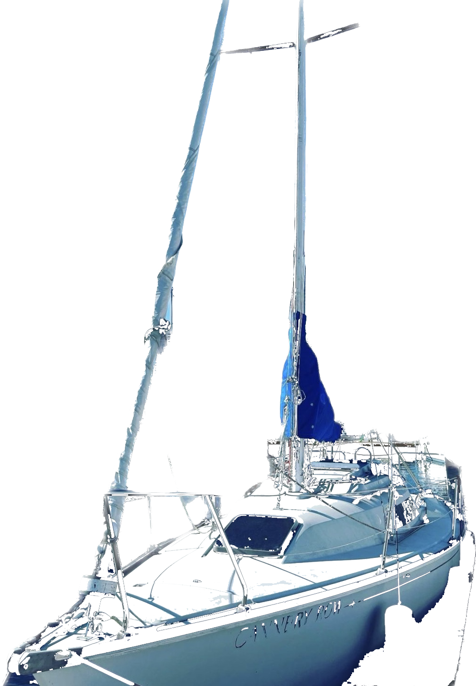

Hello, I'm Cannery Row!
I am a C&C27 MK5 and registered at the port of Toronto, ON and currently berthing at LaSalle, Burlington.
The C&C 27 Mk V is a small recreational keelboat, built predominantly of fibreglass. It has a masthead sloop rig and a fixed keel, available in standard fin and shoal draft. The design features a raked stem, a reverse transom and a transom-hung rudder controlled by a tiller. The fin keel version displaces 4,420 lb (2,005 kg) and carries 1,715 lb (778 kg) of lead ballast. The shoal draft keel version displaces 5,080 lb (2,304 kg) and carries 2,075 lb (941 kg) of ballast.
